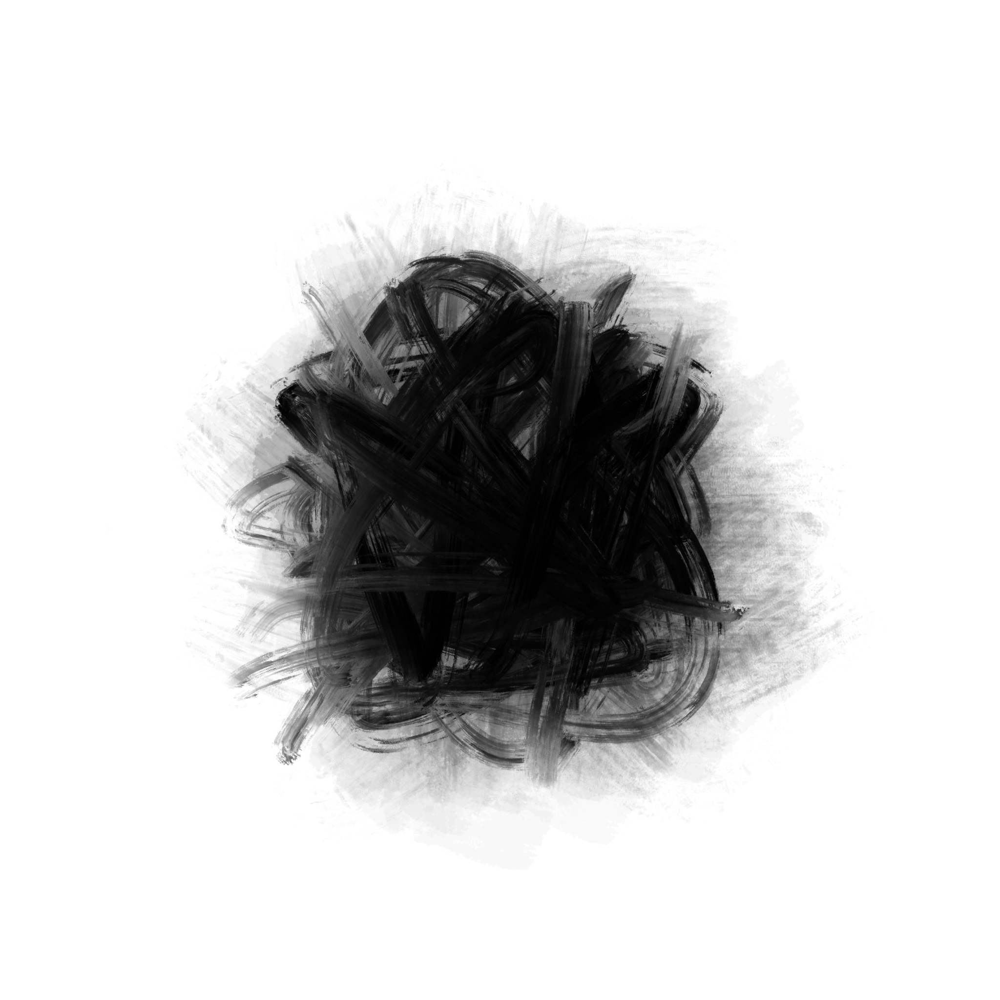
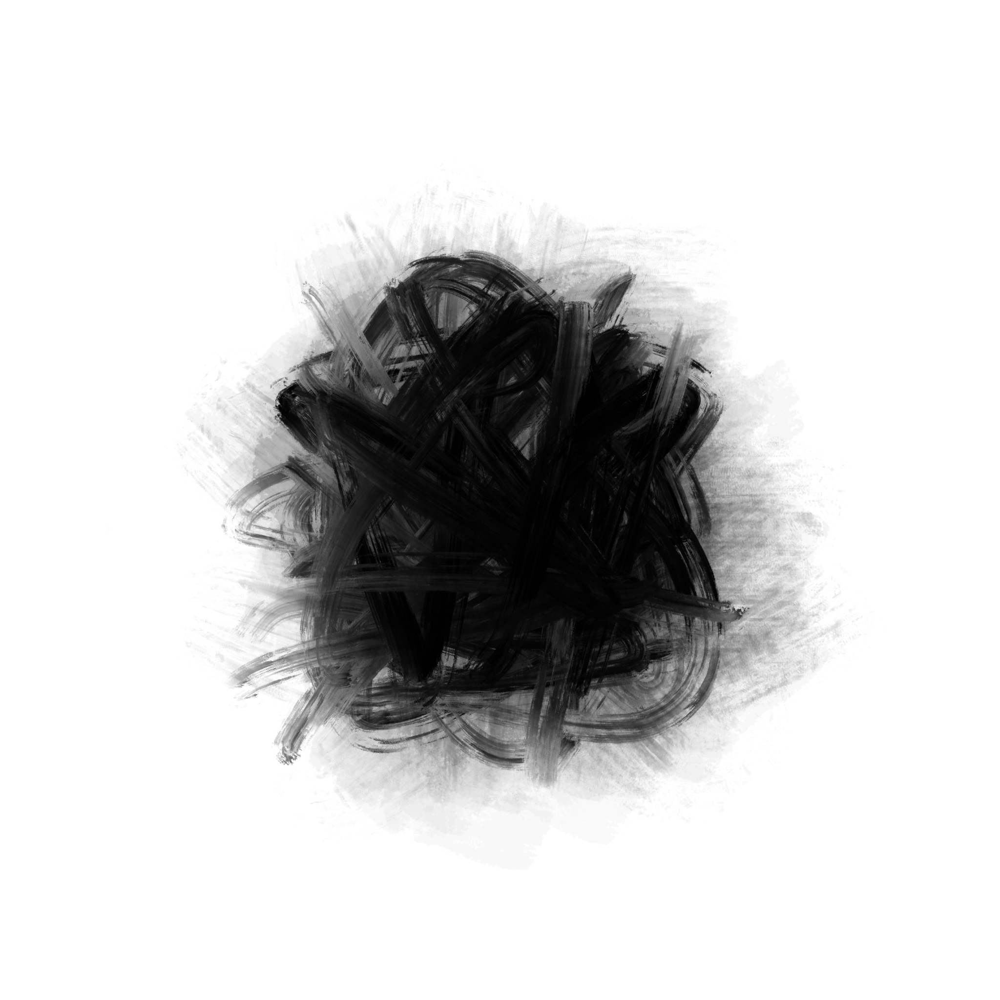

Angry Ink Ball
Brushstroke Representation: Dry Rubbing
Ancient Chinese ink painters often depicted scenes of raging storms,
thunder and lightning, and intense anger with dry rubbing
brushstrokes, expressing intense emotions of anger, symbolizing the
eruption of power and emotional excitement. Through chaotic brushwork,
strong contrasts, and a sense of chaos in the composition, they
created an atmosphere of excitement and violence, presenting a unique
way for literati to express their surging anger and emotional release.
 
